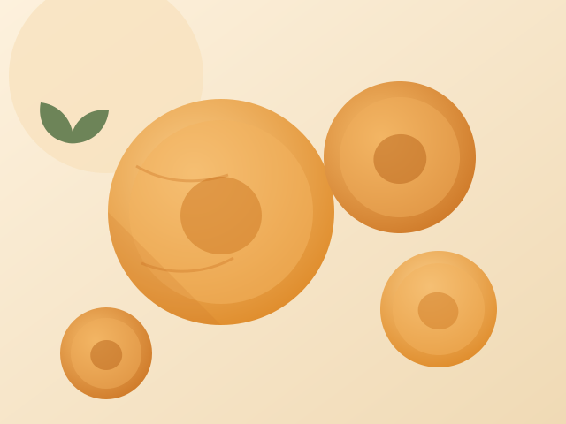

Jumbo 1–2 numara
En iri, parlak ve dolgun yarımlar. Hediyelik paketler, üst segment perakende ve meyvenin bütün göründüğü her yer için alınır.

Malatya'nın Hacıhaliloğlu kayısısı tam renginde toplanır, ikiye ayrılır, çekirdeği çıkarılır ve rakımlı kurutma alanlarına serilir. Ürün buradan ikiye ayrılır.
Kükürtlü kayısı, kurutulmadan önce gıda sınıfı kükürt dioksitle işlem görür; bu, parlak turuncu rengi ve daha yumuşak dokuyu korur. Doğal kayısı bu adımı hiç görmez ve daha karamelimsi bir tatla koyu maun rengine kurur. İkisini de satıyoruz ve hangisinin pazarınıza uyduğunu dürüstçe söylüyoruz.
| Botanik adı | Prunus armeniaca, Hacıhaliloğlu çeşidi |
|---|---|
| Menşe | Malatya, Türkiye |
| Tipler | Kükürtlü (sarı), doğal (koyu), organik |
| Boylar | 1 numara (≤60 adet/kg) ile 6 numara (≤180 adet/kg) arası |
| Nem | %20–24 |
| SO₂ seviyesi | Alıcı spesifikasyonuna göre (genellikle 1.500–2.000 ppm); doğalda 0 ppm |
| Hasat | Temmuz – Ağustos, yıl boyu sevkiyat |
| Raf ömrü | 4–18 °C ve %65 bağıl nemde 18 ay |
| GTİP kodu | 0813.10 |
Atıştırmalık ve kuruyemiş karışımları, kahvaltılık gevrek ve bar, fırıncılık ve pastacılık dolguları, komposto ve et yemekleri, bebek maması ve meyve püreleri.
Bütün yarımlar kilodaki adet sayısına göre satılır; jumbodan küçüğe. Onun altında sanayi spesifikasyonuna göre kesim, küp ve püre yapıyoruz.
En iri, parlak ve dolgun yarımlar. Hediyelik paketler, üst segment perakende ve meyvenin bütün göründüğü her yer için alınır.
Pazarın büyük kısmını taşıyan orta kalibreler. Tutarlı boy, fiyat ve görünüm arasındaki en iyi denge.
Zaten kesilerek ya da harmanlanarak kullanılan karışımlar, gevrekler ve barlar için daha küçük yarımlar.
Hiçbir şey eklenmeden kurutulur; koyu kahve renkli ve karamel tatlılığında. Temiz etiket ve organik gruplar için doğru kalite.
Sözleşmeli organik bahçelerden AB ve USDA NOP sertifikalı partiler. Miktar sınırlıdır ve sezona göre tahsis edilir.
Fırıncılık, müsli ve şekerleme için pirinç unlu küpler. 8×10 mm ve 6×6 mm kesimler de yapılır.
Kükürtlü ya da doğal kalitede, kilitli ve baskılı doypack. Kendi markanızla ya da bizimkiyle rafa hazır.
Süt ürünleri, bebek maması ve içecek hatları için, istediğiniz briks değerinde üretilen pürüzsüz kayısı püresi.
Dökme kaliteler çift iç torbalı kolilerde, ısıl işlemli paletler üzerinde sevk edilir; talebe göre ahşap kasa sunulur.
Güncel fiyat listesini isteyinPazarınızın limitlerine göre işliyor ve her partiyi belgeliyoruz.